このページはまだ翻訳されていません。英語のまま表示しています。英語のページ。
CAPEX UAT Guide — from 2D drawings to the dashboard¶
Document control
| Document | CAPEX UAT Guide — from 2D drawings to the dashboard |
| Purpose | The step-by-step test script for the User Acceptance Test of the pilot client (Sysnova): BIM drawings to a priced model, the ERP exercise, the CAPEX dashboard |
| Revision | 2026-11-22 (f) |
| Status | Issued for UAT. Proven step by step by the UAT Dry Run of 2026-11-19 (86 of 86 steps PASS, the 80 steps of this guide and the 6 setup steps of the Developer Guide §3); the dry-run report is issued separately and stays as signed. Since then steps C1.1, C2.1, C3.2, C4.1, C4.2, C4.4, C5.1, D3, D4, D9 and L3 (and B4.1, C3.1, C3.2, C5.1, D2, D8 after them) carry the corrections of the change list (items 22 to 25). What changed or was found since is listed after this cover. |
| Prepared and issued by | Redhuan D. Oon, Project Consultant |
| For | The pilot client's UAT team: System Setup, BIM, Project Mgmt Accounting |
| The latest copy | Page: red1oon.github.io/BIMCompiler/CapexUATGuide · PDF: CapexUATGuide.pdf. The PDF is made from the page at every publish and checked (pages, links). |
Changes since the signed UAT report: listed on the next page. Read them even if you have already done the UAT.
Revision history
| Revision | What changed |
|---|---|
| 2026-11-22 (f) | Film part 3 re-published, linked (item 20); item 25 |
| 2026-11-22 (e) | Item 24 |
| 2026-11-22 (d) | Item 23 |
| 2026-11-22 (c) | Items 9 to 19 moved into their steps; item 22 |
| 2026-11-22 (b) | Legacy iDempiere: A5, L1 to L3 (item 21). No step changed |
| 2026-11-22 | Change list item 20 and See how item 3: film part 3, linked. No step changed |
| 2026-11-21 | Change list items 9 to 19 (film part 3). No step changed |
| 2026-11-20 (b) | Change list item 8 and See how item 2: film part 2, linked. No step changed |
| 2026-11-20 | Pages Changes since…, What is this? (How do I pass?), Contents, See how; short tables kept whole; A3.1 Pack In window; B3.1 second currency |
| 2026-11-19 | This cover; each section on a new page; page numbers; every link in the PDF opens the public site |
| 2026-11-18 | Dry-run corrections: A1 links Developer Guide §3; D2b, D3, D8 fresh-GardenWorld figures; D9 30-minute refresh; B4.4 Task Line |
| 2026-11-15 | Roles and the checklist sheet; B00 export from BricsCAD; B0 from the sheets as drawn to the marked set; B3.1 measured total cost; B5 mark your run with the reference pack; the PDF |
| 2026-11-14 | Corrections from the full dry run: window names and menu paths, chapter C step by step, C4 Issue to Project, construction products at standard cost, chapter B on the Shed drawing set |
| 2026-11-13 | First issue |
Changes since the signed UAT report (2026-11-19)¶
Read these even if you have already done the UAT. If your run met one of them, retest that step. They go into the report's appendix; the signed report itself is not changed.
| # | Step | What | Status | What to do |
|---|---|---|---|---|
| 1 | B5.2, B5.3 | The UAT Run Checker wrongly read box 3 (your database) as FAIL: tables differ, project_metadata 4 vs 5 when you skipped the optional Accept all (B2.2c). | Fixed 2026-11-19, live | If you saw that FAIL: reload the Run Checker and mark your run again with the same files |
| 2 | PDF download | Right after the site is updated, ⬇ Download the PDF can fail once (Failed - Unknown server error, the file saved as .html). |
Noted | Wait a minute and click again; the PDF is a few MB |
| 3 | A3.1 | This step's Confirm described only the folder script. The Pack In window ends with the Process Message Processed=225 Un-Resolved=0. | Corrected in this revision | If you used the window, that message is a pass |
| 4 | B4, D | The USD amount reaches the Project Order unchanged (B4.1, B4.2, B4.4). It is as correct as the shipped rate pack, not a market price. Chapter D's dashboard reads the GardenWorld test projects, not the Shed. | Noted | None |
| 5 | B3.1 | The amount in brackets is the rate pack's second currency (RM), whatever language you choose. Showing your local currency for the language you choose is ongoing development. | Noted, in development | Compare the USD figure |
| 6 | (film) | The hands-on film shows the ready-marked sheets. The raw-sheet path (B0: mark the sheets yourself, then Arrange) is to follow. | Noted | None; B0 is unchanged |
| 7 | A2.2, A3.1, C (log in) | After you log in as GardenAdmin, Chrome may show its own window Change your password: the password you just used was found in a data breach. That is Chrome's warning about the well-known demo password, not an iDempiere error. Until you close it, clicks on the page do nothing. | Noted | Press OK on Chrome's window, then go on |
| 8 | B0, B2.3, B5 (film) | The film UAT, hands on, part 2 shows the path item 6 said was to follow: the nine sheets as drawn, marked by hand (B0.1 to B0.9), Arrange (B2.3), and the Run Checker with your nine marked copies in box 2 (B5): every row and the run read PASS. | Film published: youtu.be/WvPgjcMbSwo | None; B0 is unchanged. Watch it before you mark the sheets yourself |
| 9 | C (log in) | The guide names no organization. With the default * a purchase order will not save: Fill mandatory fields: Organization, Warehouse. |
Corrected in the step (2026-11-22 (c)) | Follow chapter C's log in note: it now says this |
| 10 | C1.1, D4 | The order window prices a line to the Purchase list's 2 decimals (68.1167 becomes 68.12), so an order total differs from quantity × standard cost (TD_RIVERSIDE 1,975.48, not 1,975.38; TD_DATAHALL 1,807.92, not 1,799.55, as 1.075 becomes 1.08). D4's Open purchase orders then reads USD 6,741.25, not 6,738.39. D2b and D3 are not affected (an issue uses the standard cost). | Corrected in the step (2026-11-22 (c)) | Follow the step: it now says this |
| 11 | C2.1 | Create lines from lists no lines on this iDempiere build (its search binds the wrong field to the order). | Corrected in the step (2026-11-22 (c)) | Follow the step: it now says this |
| 12 | C3.2 | The Business Partner search of the Payment window opens with Vendor = No, so no vendor is listed. | Corrected in the step (2026-11-22 (c)) | Follow the step: it now says this |
| 13 | C (log in) | Chrome's Save password? stays open after you log in and takes the keys meant for the page. | Corrected in the step (2026-11-22 (c)) | Follow chapter C's log in note: it now says this |
| 14 | C4.1, C5.1, D6 | The test projects have Line Level = Project; the Project window then hides the Phase tab. | Corrected in the step (2026-11-22 (c)) | Follow the step: it now says this |
| 15 | C4.4 | Project Balance shows 4 decimals (204.3501, 577.625); the guide prints them rounded (204.35, 577.63). | Corrected in the step (2026-11-22 (c)) | Follow the step: it now says this |
| 16 | C5.1 | After you tick Complete, Save is refused: Fill mandatory fields: Invoice Rule. The test data's phases carry none. | Corrected in the step (2026-11-22 (c)) | Follow the step: it now says this |
| 17 | C5.1 | The Phase tab is a list under the header. | Corrected in the step (2026-11-22 (c)) | Follow the step: it now says this |
| 18 | D3 | Adding up the panel's Spent column gives 2,020.46; the tile reads 2,020.45 (each row is rounded to the cent). | Corrected in the step (2026-11-22 (c)) | Follow the step: it now says this |
| 19 | C4.2 | Each Issue to Project opens its own window tab; after several, the first tabs are pushed off the strip. | Corrected in the step (2026-11-22 (c)) | Follow the step: it now says this |
| 25 | B4.1, C3.1, C3.2, D | A fourth independent check of the film part 3: B4.1 the Find list fills only when you search (click the model, F, type a word such as column, Enter; revision (d) wrongly said it shows parts at once); C3.2 type the vendor's search key SeedFarm (the Payment window does not find it by name); C3.1 the dialog's own Create lines from button, not the header's; D's read job ends with a line §DASH_LEGACY_READ_VERDICT PASS …. |
Corrected in this revision | Retest a step of this list if you did it before |
| 24 | B4.1, C3.1, D2, D9, sign-off | A third independent check of the film part 3: C3.1 says Save before Create lines from (no second Save); D9 says Log Out, then log in with Select Role and HQ; B4.1 names the key F; D2's ERP ↗ may ask you to log in; the checklist and sign-off count the legacy-only steps (A5, L1 to L3). | Corrected in this revision | Retest a step of this list if you did it before |
| 23 | B4.1, L, C3.1, C3.2, C5.1, D8, D9, C (log in) | A second independent check of the film part 3 against this guide: do the legacy L1 to L3 after chapter D (or on a copy: SHED is one more project); L3 and the chapter C log in name Chrome's windows, the demo password and closing each document's tab; C3.1 runs with the window's own Create lines from button; C3.2 half paid is rounded up to the cent; C5.1 says what to do with no Phase tab; D9 money goals are rounded to the unit; B4.1's list shows parts at once. | Corrected in this revision | Retest a step of this list if you did it before |
| 22 | C1.1, C2.1, C3.2, C4.1, C4.2, C4.4, C5.1, D3, D4, D9 and L3 | The steps now say what works. Items 9 to 19 were written only in this list; each is now in its step, so a step read on its own passes (C5.1 was the one that stopped a tester: Save refused, Fill mandatory fields: Invoice Rule). Also new in D: the read job ends with §DASH_LEGACY_READ_VERDICT PASS and needs BRIDGE_USER/BRIDGE_PASS on a server that is not localhost; D9 says what the Home goals' percents are measured against (the targets A2 installs), so Actual Cost reads 0 % on the test data. Found by an independent check of the film part 3 against this guide. |
Corrected in this revision | Retest a step of this list if you did it before |
| 21 | A5, B4 | If your ERP is a legacy iDempiere: the administrator installs the BIM OOTB plugin (A5, steps LA1 to LA4); then B4 from the Viewer that your iDempiere serves, steps L1 to L3 under B4. The Viewer keeps your sign-in ids when you open a file, and open ↗ opens your iDempiere's Project. | New in this revision | Only with a legacy iDempiere: A5, then L1 to L3 |
| 20 | B4, C, D (film) | The film UAT, hands on, part 3 shows B4, every document of chapter C made by hand, chapter D, and last the legacy B4 (L1 to L3). Items 9 to 19 are what it met on the way. | Film published: youtu.be/g7FTNnbbybA (2026-11-22, follows revision (f); replaces the first upload) | None; no step changed. Watch it before chapter C |
What is this?¶
A hands-on test script for the testers of the pilot client (Sysnova). Each step says what to do, what you should see, and has a box to tick. A value is affirmed at its source, not trusted. Wherever a step gives a number, it also says Source: where the number is kept (a record, a field, a formula) and what to open to see it there. Open that source, read the value yourself, and tick Pass only if it matches. A figure on the dashboard is never the evidence: the rows behind it are.
Work top to bottom: every chapter uses what the one before produced. Write anything that differs on the Notes line at the end of each chapter.
Dates in the test data are set for 13 November 2026. Testing well after that day still works, but the colours on the dashboard (on time, late, over budget) drift with the calendar.
How do I pass?
Do every step and tick its box. Your run is then marked in step B5 · Mark your run, the last section of chapter B (B5.1 to B5.4). It is a step of this guide like any other, not a separate task.
In B5 you open the UAT Run Checker, give it the files and the two lines your own run produced, and press Mark my run. It compares them with the reference pack, a run already proven correct, and reads PASS, FAIL or NOT GIVEN for each one. It works in your browser: nothing is uploaded. Then press Download result.
Your final goal is that file, uat_result.json: attach it to your signed sheets and send both back to the person who runs the UAT. A box you leave out reads NOT GIVEN, never PASS. A tester who skipped B00 and B0 gets PARTIAL PASS, which is expected (B5.3).
See how
Films of the steps, on a real screen:
- UAT, hands on: where to click: https://youtu.be/PBp4qfV4mIo. From the downloads to B5 and the result file.
- UAT, hands on, part 2: https://youtu.be/WvPgjcMbSwo. A3.1 Pack In, then B0 on the nine sheets as drawn (marked by hand), B2.3 Arrange, and B5 with all four rows PASS.
- UAT, hands on, part 3: https://youtu.be/g7FTNnbbybA. B4 the model to the ERP, chapter C with every document made by hand in the iDempiere windows, chapter D on the dashboard, and last B4 to a legacy iDempiere (L1 to L3). It follows this revision of the guide.
Contents¶
- Changes since the signed UAT report
- What is this?
- Checklist: who does what
- A · Set up (System Setup, once)
- B · BIM: the Shed, from 2D drawings to a priced model
- B00 · For the drafter: export the nine sheets from BricsCAD as DXF
- B0 · From the drawings as drawn to the marked set
- B1 · Get to know the drawings: one sheet at a time
- B2 · Open all nine sheets: the drawings arrange themselves
- B2b · Convert the drawings to the 3D Shed
- B3 · Fit the 4D schedule and the 5D rates to your local scene
- B4 · Send the model to the ERP as a Project Order
- B5 · Mark your run against the reference pack
- C · ERP: the hands-on exercise
- D · The dashboard
- Known limits (do not fail a step on these)
- Sign-off
Checklist: who does what¶
Three roles run this test. Tick a part when all its steps pass, and initial it.
| Role | Who | Needs |
|---|---|---|
| System Setup | your iDempiere administrator | psql and a server restart, the GardenWorld Admin login, Node.js (D's read job) |
| BIM | a BIM / QS tester; your drafter for B00 | a desktop browser; the drafter: BricsCAD |
| Project Mgmt Accounting | a project / accounting user | the GardenWorld Admin login, a desktop browser |
Order: System Setup first. BIM may start at once (public apps, not your iDempiere). Project Mgmt Accounting after A; D after C.
| Part | Role | Done in | Needs first | Hands over | Steps | Done / initials |
|---|---|---|---|---|---|---|
| A1 · Own web copy (optional) | System Setup | web server | — | your copy of the apps | 4 | ☐ |
| A2 · Install the dashboard | System Setup | psql, server restart |
— | the dashboard's scripts in iDempiere | 3 | ☐ |
| A3 · Load the test data | System Setup | Pack In, psql |
A2 | 12 projects, 10 products | 6 | ☐ |
| A4 · ERP model check | System Setup | iDempiere | A3 | vendor, stock, products | 4 | ☐ |
| A5 · Plugin (legacy only) | System Setup | server, Role window | — | the Viewer at /bimootb |
4 | ☐ |
| B00 · Export the sheets as DXF | BIM (drafter) | BricsCAD | the drawing | nine .dxf |
3 | ☐ |
| B0 · To the marked set | BIM | Modeller | B00 or pack sheets/ |
nine _marked.dxf |
11 | ☐ |
| B1 · The sheets one at a time | BIM | Modeller | B0 | — | 4 | ☐ |
| B2 · Arrange and convert | BIM | Modeller, Viewer | B0 | SHED_extracted.db |
11 | ☐ |
| B3 · 4D and 5D | BIM | Viewer | B2 | total cost, finish date | 6 | ☐ |
| B4 · Project Order | BIM | Viewer, browser ERP | B2 | project SHED | 4 (legacy: L1–L3) | ☐ |
| B5 · Mark your run | BIM | Run Checker | B0.9 B2.8 B2.9 B3.1 | uat_result.json |
4 | ☐ |
| C1 · Purchase orders | Project Mgmt Accounting | iDempiere | A3, A4 | orders | 2 | ☐ |
| C2 · Material receipt | Project Mgmt Accounting | iDempiere | C1 | goods received | 1 | ☐ |
| C3 · Invoice and payment | Project Mgmt Accounting | iDempiere | C2 | invoices, payments | 2 | ☐ |
| C4 · Issue to site | Project Mgmt Accounting | iDempiere | A3 | project spending | 4 | ☐ |
| C5 · Tick a phase | Project Mgmt Accounting | iDempiere | A3 | a phase completed | 1 | ☐ |
| D · The dashboard | Project Mgmt Accounting | browser | C; read job (System Setup) | figures signed off | 10 | ☐ |
Steps: A 17 · B 43 (29 if given the marked copies: skip B00, B0) · C 10 · D 10, as on the sign-off.
What you need
| Item | Where |
|---|---|
| A desktop browser (Chrome, Edge or Firefox) | — |
| The BIM apps | the public site red1oon.github.io/bim-ootb, or your own copy (chapter A1) |
| What to install on your own machine first (git, Node.js, Python 3, a browser; VS Code only for developers) | Developer Guide §3 |
| Your iDempiere, with its GardenWorld client and a GardenWorld Admin login | your server |
| The test-data pack | 202611131200_GardenWorld_CAPEXTestData.zip |
| The construction-products script (10 materials at standard cost) | 202611141500_CAPEX-TD-CONSTRUCTION-PRODUCTS.sql |
| The dashboard's scripts for iDempiere | listed in chapter A2, all in the bim-ootb repository |
| The Shed drawing set: nine 2D sheets as DXF files, one per sheet | exported from BricsCAD by your drafter as in chapter B00 (a .dwg cannot be opened); chapter B0 then turns them into the nine …_marked.dxf files that chapters B1 onward open (a tester given the …_marked.dxf copies skips B00 and B0) |
| The reference pack (to mark your run, chapter B5) | Shed_UAT_pack_20261115.zip: the nine sheets as B00 exports them, the supplied marked copies, the reference Viewer database and the expected values |
| The UAT Run Checker | check.html in your browser: it reads your files locally, nothing is uploaded |
The nine Shed sheets are the pilot client's own work, so its testers may use them. Any other drawing set goes through the same way once its sheets carry their settings (levels, datums and layer meanings), which the Modeller's Drawing metadata panel records.
Where to find each window. Every window and process below is in iDempiere's left-hand menu; open the folder and click the entry, or type the name in the menu's Search box. A new record is made with the New button in the toolbar, saved with Save, and a document is finished with its Document Action button (choose Complete, then OK).
| Name used in this guide | Menu path |
|---|---|
| Pack In | Application Dictionary ▸ Application Packaging ▸ Pack In |
| Accounting Schema | Performance Analysis and Accounting ▸ Accounting Rules ▸ Accounting Schema |
| Performance Measure Calculation | Performance Analysis and Accounting ▸ Performance Measurement ▸ Performance Measure Calculation |
| Business Partner | Partner Relations ▸ Business Partner Rules ▸ Business Partner |
| Product | Material Management and Pricing ▸ Material Management Rules ▸ Product |
| Warehouse and Locators | Material Management and Pricing ▸ Material Management Rules ▸ Warehouse and Locators |
| Project | Project Management ▸ Project |
| Issue to Project (a process) | Project Management ▸ Issue to Project |
| Project (Lines/Issues) | Project Management ▸ Project (Lines/Issues) |
| Purchase Order | Requisition-to-Invoice (Purchasing) ▸ Purchase Order |
| Material Receipt | Requisition-to-Invoice (Purchasing) ▸ Material Receipt |
| Purchase Invoice and Credit/Debit Note | Requisition-to-Invoice (Purchasing) ▸ Purchase Invoice and Credit/Debit Note |
| Payment and Receipt | Open Items (Financial Movements and Aging) ▸ Payment and Receipt |
Who does what: see the checklist sheet above.
A · Set up (System Setup, once)¶
A1 · The BIM apps on your own server (optional)¶
The Modeller, the Viewer, the Kernel ERP and the dashboard are plain web files: no application server and no database server. Use the public site, or serve your own copy.
Setting up your own copy from nothing (what to install first: git, Node.js, Python 3 and a browser; how to download the code, serve it, open the three apps and, for developers, set up VS Code) is written once, in the Developer Guide, §3 Start from scratch. Follow it first if your machine is new to the project. Steps A1.1 to A1.4 below are the same download-and-serve steps, with what to confirm for this exercise. Installing iDempiere and its PostgreSQL database is not covered by either guide: chapter A2 onward starts from an iDempiere you already run.
| # | Do | Confirm on screen | Result |
|---|---|---|---|
| A1.1 | Copy the repository: git clone https://github.com/red1oon/bim-ootb |
A folder bim-ootb with index.html, modeller/, erp/, capex/ |
☐ Pass ☐ Fail |
| A1.2 | Serve the folder with any static web server, for example python3 -m http.server 8080 inside it |
The server says it is listening | ☐ Pass ☐ Fail |
| A1.3 | Open http://<your-server>:8080/index.html. On a first visit the page is a picture with two pills: click the red one |
Three doors appear under choose your door. Hold the pointer on each to read its name: Buildings / IFC, BIM Modeller, ERP | ☐ Pass ☐ Fail |
| A1.4 | Open /capex/index.html on your server |
The dashboard opens on its built-in sample store (3 projects). The computed tiles read no data (CAPEX PA rows not installed): that is correct until the page reads your iDempiere (chapter D) | ☐ Pass ☐ Fail |
The large building databases are not stored in the repository. To open the sample buildings from your own server, ask us for the files and place them as the Viewer guide says.
A2 · Install the dashboard into your iDempiere¶
All scripts are iDempiere migration scripts (PostgreSQL), written for the GardenWorld client. Apply them with psql in file-name order, run update_sequences(), then restart the server: iDempiere keeps web-service types and measures in memory.
| Folder in the repository | Script(s) | What it adds |
|---|---|---|
capex/legacy/ws/migration |
202611042300_CAPEX-WS-READ.sql |
Read-only web-service types for the dashboard's tables, and the role allowed to use them |
capex/legacy/ws/q4 |
202611111400_CAPEX-WS-Q4.sql |
Reading purchase orders and project issues |
capex/legacy/ws/chain |
202611121700_CAPEX-WS-CHAIN.sql |
Reading receipts, vendor invoices and payments (the supply-chain view) |
capex/legacy/ws/pacalc |
202611131400_CAPEX-WS-PACALC.sql |
Reading the dashboard's own formulas (Performance Analysis measures) from your server |
capex/legacy/migration |
every script, in name order (202611031900_CAPEX-R0.sql … 202611141000_CAPEX-FORECAST-PROJECTS.sql) |
The dashboard's formulas as Performance Analysis measures, the Home tab goals, their targets and colours. Money goals show the currency of your login |
| BIM Document plugin | see Installing it | Drawings filed against projects (optional for this test) |
| # | Do | Confirm on screen | Result |
|---|---|---|---|
| A2.1 | Apply the scripts above, run update_sequences(), restart iDempiere |
Each script ends without an error; the server comes back | ☐ Pass ☐ Fail |
| A2.2 | Log in as GardenWorld Admin, open the Home tab | The Performance panel shows CAPEX goals, for example CAPEX Total Projects, CAPEX Approved Budget | ☐ Pass ☐ Fail |
| A2.3 | Open the window Performance Measure Calculation | Rows named CAPEX … are there; their SQL can be read and edited here. This is where the dashboard’s formulas live | ☐ Pass ☐ Fail |
Each script carries a Restore line at its top that removes what it adds.
A3 · Load the test data (GardenWorld)¶
The pack holds 12 projects (Value TD_…, names ending (test data)) with 42 phases, 84 tasks, 84 planned lines, some phases already ticked complete, and 2 test products. It holds no documents and none of the construction materials: those come from the script in A3.6: you make the orders, receipts, invoices, payments and issues yourself in chapter C. The data can stay in GardenWorld after the test.
The pack goes to the client named in its file name (GardenWorld), and is packed in by that client's administrator.
| # | Do | Confirm on screen | Result |
|---|---|---|---|
| A3.1 | Put the zip in an empty folder on the server and run utils/RUN_ApplyPackInFromFolder.sh <folder>, or use the Pack In window logged in as GardenWorld Admin (choose the zip, then run it). In the window: New, type a name, Save; the paperclip (Attachment) ▸ Load the zip ▸ OK; then the PackIn button ▸ OK |
The run prints Successful application of …CAPEXTestData.zip, Error=false and ends with Done. The log also prints a java.lang.Exception trace for each planned line (MProduct.loadPO: NO Data found): these do not stop the run, and the rows are checked in A3.2 to A3.4. With the Pack In window, the Process Message reads Processed=225 Un-Resolved=0 |
☐ Pass ☐ Fail |
| A3.2 | Open the Project window, search Value TD_% |
12 projects, for example TD_RIVERSIDE – Riverside Tower (test data) Source: the pack file itself holds 12 C_Project records; the window’s record count (status bar) is the count in your database |
☐ Pass ☐ Fail |
| A3.3 | Open TD_RIVERSIDE, tab Phase | 5 phases with dates; the first 3 are ticked Complete Source: the Phase tab’s own Complete tick boxes (the pack set them); count them yourself | ☐ Pass ☐ Fail |
| A3.4 | Look at the project’s Currency | The currency of GardenWorld’s Purchase price list. The pack sets no currency: iDempiere takes it from the price list, so it follows your setup | ☐ Pass ☐ Fail |
| A3.5 | Pack the same zip in a second time | No new projects: still 12. The folder run says the pack is already installed and skips it | ☐ Pass ☐ Fail |
| A3.6 | Apply the products script with psql (it can be applied twice: the second run adds nothing), then restart iDempiere: the accounting schema is kept in memory. The script makes 10 Construction products at the Schedule of Rates prices and sets GardenWorld's primary accounting schema (GardenWorld US/A/US Dollar) to Standard costing, because iDempiere costs a project issue by the schema's method. Its first lines hold the Restore line |
The script ends without an error. Accounting Schema window: GardenWorld US/A/US Dollar, Costing Method Standard | ☐ Pass ☐ Fail |
A4 · ERP model setup, where needed¶
GardenWorld already has the vendor, the warehouse and the locator; the products come from A3.6. Check them before chapter C:
| # | Do | Confirm on screen | Result |
|---|---|---|---|
| A4.1 | Business Partner window: find a vendor (for example Seed Farm Inc., the one this guide uses) | At least one partner with Vendor ticked | ☐ Pass ☐ Fail |
| A4.2 | Product window: search Value PWD-%, then open PWD-04.2 Brick masonry |
10 products in category Construction. PWD-04.2: unit M3, stocked, price 68.1167 on the Purchase price list (tab Price; 8,174 BDT ÷ 120), and a Standard cost of 68.1167 (tab Costs) Source: the product’s Description field names it: PWD SoR 2022 item 04.2, page …, 8174 BDT/M3 = 68.1167 USD at 120. That is the Public Works Department Schedule of Rates item; read the rate and the item number there and divide by 120 yourself | ☐ Pass ☐ Fail |
| A4.3 | Warehouse and Locators window: open HQ Warehouse, tab Locator | It has the locator Default HQ Locator, where you receive and issue | ☐ Pass ☐ Fail |
| A4.4 | Product window: Test material A (test data) | The pack’s product exists, in category TD Materials (test data) | ☐ Pass ☐ Fail |
A5 · The BIM OOTB plugin (only if your ERP is a legacy iDempiere)¶
Skip A5 if the BIM tester sends the Project Order to the Kernel ERP (B4). With a legacy iDempiere 13, B4 is done from the Viewer that your iDempiere serves (the BIM tester's steps L1 to L3), and that Viewer comes from this plugin. (Why: a browser does not let a page from another site call your iDempiere, so the Viewer is served by the iDempiere itself.) The plugin's source and its build script are in iDempiereOOTB/ of the BIMCompiler repository. You need JDK 17 (javac) and a copy of the bim-ootb repository (the Viewer it packs). Take a database backup first if you want to go back exactly: removing the plugin later leaves the rows its setup pack wrote.
| # | Do | Confirm on screen | Result |
|---|---|---|---|
| LA1 | Build the two bundles: iDempiereOOTB/org.idempiere.bimootb/tools/build_bundle_poc.sh <your iDempiere>/server <your bim-ootb copy> <an empty folder> |
Its last line starts §BIMOOTB_BUNDLE and names 2pack=2Pack_13.1.0.zip. The folder holds two folders: org.idempiere.bimootb_13.1.0.<stamp> and org.idempiere.bimootb.viewer_13.1.0.<stamp> |
☐ Pass ☐ Fail |
| LA2 | Stop iDempiere. Copy both folders into server/plugins/. Add one line for each to server/configuration/org.eclipse.equinox.simpleconfigurator/bundles.info: org.idempiere.bimootb,13.1.0.<stamp>,plugins/org.idempiere.bimootb_13.1.0.<stamp>/,4,true and the same for org.idempiere.bimootb.viewer. Start iDempiere |
The plugin packs in its own setup pack a little after the login page answers (up to 3 minutes). Then the Role window lists the role BIM OOTB Push | ☐ Pass ☐ Fail |
| LA3 | Role window: open the role the BIM tester logs in with (GardenWorld: GardenWorld Admin), tab Included role templates, New, choose BIM OOTB Push, Save. Then restart iDempiere | The tab lists BIM OOTB Push. (Without it the push is refused: Login role does not have access to the service type 'BIMOOTB_Query_C_Project') | ☐ Pass ☐ Fail |
| LA4 | Open your iDempiere/bimootb/viewer/viewer.html in a browser |
The Viewer opens. Give the BIM tester this address, with the user and ids of the role from LA3 (L1) | ☐ Pass ☐ Fail |
Notes (chapter A): __________
B · BIM: the Shed, from 2D drawings to a priced model (BIM)¶
This chapter uses your own Shed drawing set: the single-storey farm shed, drawn as nine 2D sheets. You will see each drawing on its own first, then the nine arranged in place, then the 3D model built from them.
The drawings are shortened, so the model is too. The real shed is 410 ft × 50 ft (124.97 m × 15.24 m): 41 bays of 10 ft, grid lines 01 to 42. The drawings show only grids 01–06 and 35–42, with the expansion joint drawn between 06 and 35; the length dimension is drawn 130 ft long and its text is written over to read 410'-0". The Modeller builds what is drawn: 13 bays, 39.62 m long. Every quantity and cost in B2b to B4 is for those 13 bays, about a third of the real shed's length. The 50 ft width is drawn to scale.
The pictures were taken from the real Modeller with these same nine files. The label at the top of each picture and the red ring around a button were added for this guide; in the canvas-only pictures the drawing lines are shown at full strength so that they print clearly.
The nine sheets. From B1 on you open the …_marked.dxf copies: they carry the levels, heights and layer meanings the Modeller needs. You make them yourself from the nine sheets as drawn in B0; the result is the same, mark for mark, as the copies supplied for this test.
| Sheet file | What it is | Role the Modeller shows |
|---|---|---|
0_FLOOR_PLAN_marked.dxf |
Floor plan | PLAN |
3_BEAM_LAYOUT_marked.dxf |
Beam layout | PLAN |
4_FOUNDATION_LAYOUT_marked.dxf |
Foundation layout | PLAN |
1N_ELEV_NORTH_marked.dxf |
North elevation | ELEV |
1S_ELEV_SOUTH_marked.dxf |
South elevation | ELEV |
2_ELEV_WEST_marked.dxf |
West elevation | ELEV |
7_ELEV_EAST_marked.dxf |
East elevation | ELEV |
8_SECTION_AA_TRUSS_marked.dxf |
Section A-A, the roof truss | SECTION |
5_DETAILS_marked.dxf |
Details and general notes | NOTES |
B00 · For the drafter: export the nine sheets from BricsCAD as DXF¶
This step is for whoever holds the drawing in BricsCAD. Send the testers DXF files, one per sheet, not the .dwg: the Modeller opens .dxf files only. BricsCAD writes a DXF with its DXFOUT command, whose options are Entities (which entities to export), Binary (leave it off: the file is then written as ASCII text), Version, and the number of decimal places (see the BricsCAD help for DXFOUT).
Settings
| Setting | Use | Why |
|---|---|---|
| File type | DXF, ASCII (text) | A binary DXF is refused by the Modeller |
| DXF version | 2018 (any of 2000, 2004, 2007, 2010, 2013, 2018 gives the same model) | R12 is refused: it has no drawing units and no hatches, and the gable walls are hatches |
| Files | one DXF per sheet | The whole drawing in one file gives no model: the Modeller cannot tell the sheets apart |
| Drawing units | Inches (system variable INSUNITS; the Shed drawing already has it) |
A file without its units gives no model |
| Decimal places | 16 (the most DXFOUT offers) | keeps the coordinates as exact as in the drawing |
| Position | as drawn: do not move, rotate or scale a sheet before exporting it | B0 types levels and one box in the drawing's own coordinates |
| Layers, dimensions, hatches | as drawn: do not explode, rename or merge them | The Modeller reads the grid lines from the dimensions, the gable walls from the hatches, and each element type from its layer name (B0.4) |
| # | Do | Confirm on screen | Result |
|---|---|---|---|
| B00.1 | Open the Shed drawing in BricsCAD. Check that the drawing units are Inches | INSUNITS reads 1 (Inches) |
☐ Pass ☐ Fail |
| B00.2 | For each row of the table below: type DXFOUT, choose Entities, select everything inside that sheet's frame (a window from one corner of the frame to the other), and confirm. Leave Binary off, choose version 2018 and 16 decimal places, and save under the file name in the table | One .dxf file per row, nine in all |
☐ Pass ☐ Fail |
| B00.3 | Send the nine .dxf files to the testers |
The testers open them in B0.1, which is the check: All defaults must list 34 yellow rows, then 113 after B0.2. Other counts mean the export differs from the drawings this guide was proven on: check the settings above and export again | ☐ Pass ☐ Fail |
| Frame in the drawing (its title) | Save as |
|---|---|
| Shed Floor Plan | 0_FLOOR_PLAN.dxf |
| Beam Lay out Plan | 3_BEAM_LAYOUT.dxf |
| Foundation Lay out Plan | 4_FOUNDATION_LAYOUT.dxf |
| North and South Elevation (one frame, two drawings): the upper drawing, North | 1N_ELEV_NORTH.dxf |
| the same frame, the lower drawing, South | 1S_ELEV_SOUTH.dxf |
| West Elevation | 2_ELEV_WEST.dxf |
| East Elevation | 7_ELEV_EAST.dxf |
| Section A-A (Truss Detail) | 8_SECTION_AA_TRUSS.dxf |
| the details frame (footing, column and grade-beam casting ratios, long sections of the beams) | 5_DETAILS.dxf |
The general Section A-A frame is not used in this test.
Proven by measurement (witness W-UAT-SHED-SOURCE, 2026-11-15) with files written in each DXF version by a DXF library, not by BricsCAD itself: ASCII 2000 to 2018 give the same model, 512 bodies, identical; R12, binary DXF, the whole drawing in one file, and a file without its units give no model. The settings above follow from that; the DXFOUT options are quoted from BricsCAD's help.
B0 · From the drawings as drawn to the marked set¶
No export from your drafter yet? The reference pack's sheets/ folder holds the nine sheets exactly as B00 writes them; start B0 from those.
The nine sheets as drawn carry no settings: the Modeller cannot tell which CAD layer is a column, how deep the footings go, or where the expansion joint is. In this step you tell it, in the Drawing metadata panel, and save the result as nine …_marked.dxf copies. Every value below is read from the drawings (the source is named in each row); nothing is invented. Type the numbers exactly as written.
The panel has sections you open by clicking their title: All defaults (the yellow list), Sheets (one card per sheet), Layers, Body heights, Exclude areas. The badge at the top says Blocked · n (n things still missing) or Qualifies.
| # | Do | Confirm on screen | Result |
|---|---|---|---|
| B0.1 | Open the Modeller. 📂 Open → Open 2D drawings (.dxf)… and select all nine sheets exported in B00: 0_FLOOR_PLAN.dxf, 3_BEAM_LAYOUT.dxf, 4_FOUNDATION_LAYOUT.dxf, 1N_ELEV_NORTH.dxf, 1S_ELEV_SOUTH.dxf, 2_ELEV_WEST.dxf, 7_ELEV_EAST.dxf, 8_SECTION_AA_TRUSS.dxf, 5_DETAILS.dxf |
The Drawing metadata panel opens. The badge reads Blocked with a number (58 or 99 on the two exports this guide was proven on: the number depends on how the sheets were cut and is not a check). All defaults lists 34 yellow rows: what the Modeller read from the files (units, sheet roles and names, grid lines) | ☐ Pass ☐ Fail |
| B0.2 | In All defaults, press Accept stated + read | The list grows to 113 yellow rows: the grid lines, level lines and roles that follow from the first ones | ☐ Pass ☐ Fail |
| B0.2b | Press Accept all | 0 yellow rows. The badge still reads Blocked with a smaller number (48 or 89). In Sheets, eight cards now show a role (3 PLAN, 4 ELEV, 1 SECTION); 5_DETAILS is the notes sheet |
☐ Pass ☐ Fail |
| B0.3 | In Sheets, open any card. In its Set field replace BUILD-NAME with SHED and press Enter |
Every sheet's Set reads SHED (typing it once fills all nine) | ☐ Pass ☐ Fail |
| B0.4 | Open Layers. Under each heading, pick the meaning of each CAD layer from its list, as in the table below. Where the table says one sheet only, press the small arrow at the right of the layer's row (Type this layer sheet by sheet) and pick the meaning on that sheet's line only | After PLAN · Col = column the badge reads Blocked · 1; after ELEV · Wall = panel it reads Qualifies. When all ten are set, All defaults shows 14 yellow rows (sizes the Modeller assumes, such as the fan depth) | ☐ Pass ☐ Fail |
| B0.4b | In All defaults, press Accept all | 0 yellow rows | ☐ Pass ☐ Fail |
| B0.5 | Open Body heights. It lists footing and beam as waiting (no elevation shows them). Type footing: z0 -1.4478, z1 -1.143, Add. Type beam: z0 3.098794, z1 3.352794, Add |
Two rows: @BODYZ=footing,-1.4478,-1.143 and @BODYZ=beam,3.098794,3.352794. The badge still reads Qualifies |
☐ Pass ☐ Fail |
| B0.6 | In Sheets, open each elevation and the section card in turn. Under Level datums (@Z), type the height 0.6096 in the first box and the card's y (table below) in y where drawn, then Add |
Each of the five cards lists a new @Z=0.6096 row beside the two it read itself (@Z=0 and the eave or ridge height). The badge still reads Qualifies |
☐ Pass ☐ Fail |
| B0.7 | Open Exclude areas. Choose 3_BEAM_LAYOUT in its list and press Exclude area (the button now reads Drag a box). On the canvas, zoom to the bay between grid 06 and grid 35: the beam layout's expansion joint is the pair of close vertical lines (about 22 cm apart) running across all four rows A to D. Drag a box from above row A to below row D that holds both lines and the small break marks beside them: start about half a metre left of the left line (not more than 1 m: two short beam ends start 1.05 m to the left) and stop about 25 cm right of the right line. The break marks reach 18 cm out from the lines; the beams of the right-hand block start 37 cm right of the right line, so the box must stop before them. Press Drag a box again to leave the tool | Exclude areas lists one row, 3_BEAM_LAYOUT @EXCLUDE=… with the box's four numbers. Without it the joint's two lines are read as four extra beams (B2b would then read 515 elements, not 511) |
☐ Pass ☐ Fail |
| B0.8 | Read the top of the panel | The badge reads Qualifies; All defaults has 0 yellow rows | ☐ Pass ☐ Fail |
| B0.9 | Press Save marked copies (at the foot of the panel) | Your browser downloads nine files named 0_FLOOR_PLAN_marked.dxf … 5_DETAILS_marked.dxf, the names used from B1 on. The panel says Downloaded: …; the files you opened are unchanged |
☐ Pass ☐ Fail |
B0.4 · the ten layer meanings
| Heading in Layers | CAD layer | Pick | Where it is read from |
|---|---|---|---|
| PLAN sheets | Col |
column | the 12"×12" column squares on the plans |
| PLAN sheets | Fo |
footing | the F-1 footing outlines on the foundation layout |
| PLAN sheets | Dim |
beam, 3_BEAM_LAYOUT only (one sheet only) | the B-1 / B-2 beam lines of the beam layout (on the other plans the layer is left unread) |
| PLAN sheets | Rod |
doorswing | the door arcs of the floor plan (Rod is on the floor plan only, so its row has no arrow) |
| ELEV sheets | Wall |
panel | the brick-wall hatches of the gable ends |
| ELEV sheets | Rod |
fan | the exhaust fans drawn on the elevations |
| ELEV sheets | Dim |
net | the zigzag nets above the low bays |
| ELEV sheets | Win |
door | the meaning the supplied set carries; it changes no element count in this test |
| ELEV sheets | 0 |
column, 1S_ELEV_SOUTH only (one sheet only) | the columns drawn on the south elevation |
| SECTION sheets | Fo |
bar | the truss members of section A-A |
B0.6 · the five level datums (0.6096 m = 24 in, the plinth level PL: on every elevation the PL line is drawn 24 in above the ground line)
| Card | y where drawn |
|---|---|
1S_ELEV_SOUTH |
-4446.6 |
1N_ELEV_NORTH |
-3895.2 |
2_ELEV_WEST |
-4515.7264 |
7_ELEV_EAST |
-3766.442 |
8_SECTION_AA_TRUSS |
-3726.416 |
B0.5 · where the body heights come from. Footing F-1 is 12 in thick, its top 45 in below the finished ground (z −1.143 m to −1.4478 m). The beams run from 122 in to 132 in above the ground (3.0988 m to 3.3528 m), as the section's lines give them; the elevations draw the beam soffit at 120 in, a 2 in difference the drawings leave open and this test does not settle.
Proven (witness W-UAT-B0, 2026-11-15): these steps, done in the real Modeller on the nine sheets as drawn, reach Qualifies, save nine copies equal mark for mark to the supplied …_marked.dxf set, and B2b's Convert then reads the same Converted: 511 elements (0 door/window fills), 2 openings cut. The datum y values are typed, not picked with the Pick button; picking was not part of the proof.
B1 · Get to know the drawings: one sheet at a time¶
Open the Modeller. The drawings are opened from 📂 Open → Open 2D drawings (.dxf)…
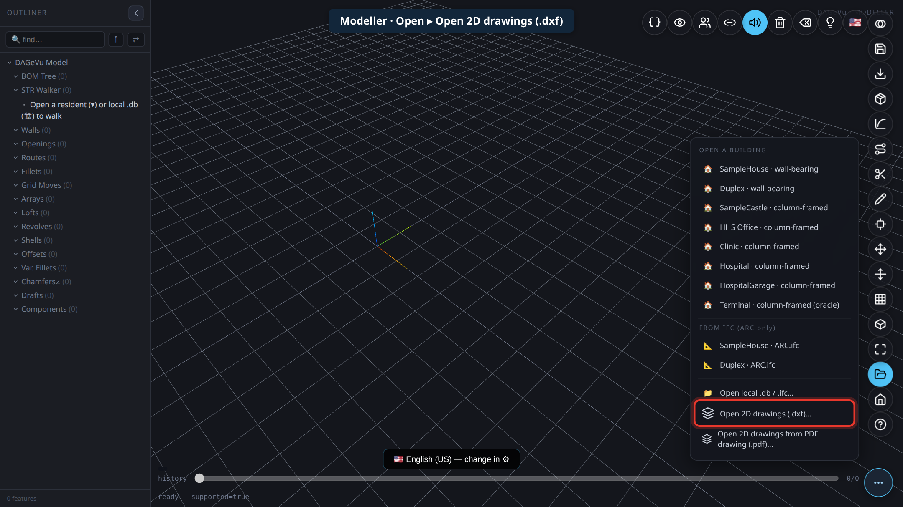
Picture B1-a · Modeller: Open ▸ Open 2D drawings (.dxf)
| # | Do | Confirm on screen | Result |
|---|---|---|---|
| B1.1 | 📂 Open → Open 2D drawings (.dxf)… and select only 0_FLOOR_PLAN_marked.dxf |
The Shed floor plan is drawn on the canvas, as in picture B1-b: the long rectangle of the shed with its grid lines and column marks. The badge in the Drawing metadata panel reads Blocked for one sheet on its own: that is expected, one sheet is not yet a building | ☐ Pass ☐ Fail |
| B1.2 | Fold the 2D Drawings panel away (the fold button in its title bar) and close the Drawing metadata panel (✕) to see the whole drawing. Turn the mouse wheel to zoom, drag to move | You recognise your own floor plan | ☐ Pass ☐ Fail |
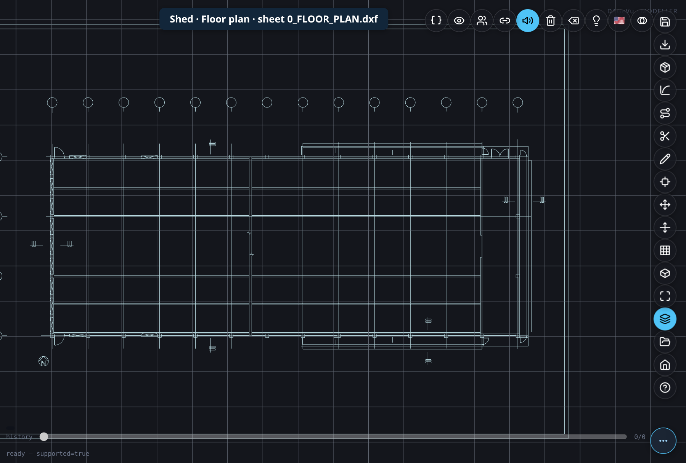
Picture B1-b · Shed · Floor plan · sheet 0_FLOOR_PLAN.dxf, on its own
| # | Do | Confirm on screen | Result |
|---|---|---|---|
| B1.3 | Reload the page. Open only 3_BEAM_LAYOUT_marked.dxf |
The beam layout is drawn, as in picture B1-c | ☐ Pass ☐ Fail |
| B1.4 | Reload the page. Open only 4_FOUNDATION_LAYOUT_marked.dxf |
The foundation layout is drawn, as in picture B1-d | ☐ Pass ☐ Fail |
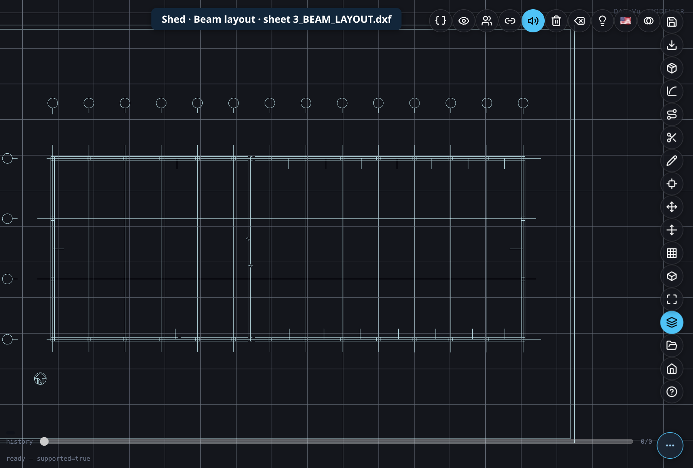
Picture B1-c · Shed · Beam layout · sheet 3_BEAM_LAYOUT.dxf, on its own
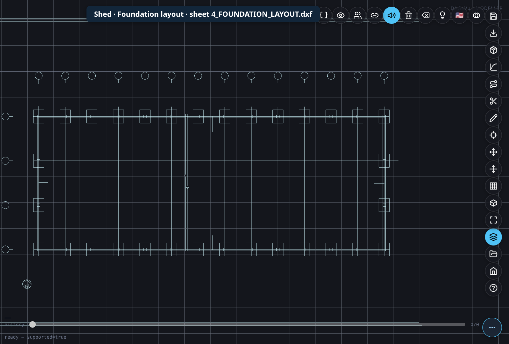
Picture B1-d · Shed · Foundation layout · sheet 4_FOUNDATION_LAYOUT.dxf, on its own
An elevation or the section opened on its own shows nothing: it has to stand on a plan. You will see them in the next step, standing in place.
B2 · Open all nine sheets: the drawings arrange themselves¶
| # | Do | Confirm on screen | Result |
|---|---|---|---|
| B2.1 | Reload the page. 📂 Open → Open 2D drawings (.dxf)… and select all nine …_marked.dxf files at once |
The 2D Drawings panel is titled 9 SHEETS and lists each file with its role: three PLAN rows, four ELEV rows, the section and the NOTES sheet (picture B2-a) | ☐ Pass ☐ Fail |
| B2.2 | Read the top of the Drawing metadata panel | The green badge reads Qualifies. Under it a line reads MISSING SHEETS · no list … INCONCLUSIVE: that is expected, because these nine files carry no list of the sheets a set should have, so the Modeller cannot count missing ones; it does not stop Convert. The SHEETS list shows each sheet with its role: three PLAN, four ELEV, one SECTION, one NOTES | ☐ Pass ☐ Fail |
| B2.2b | Below the sheets, find the yellow block ALL DEFAULTS. It says 14 yellow in 1 group. Click the ▸ on the group to open it and read the 14 rows. Each row is one setting the Modeller applied because the drawings do not state it: its name and value (for example building.type = General, fan.blades = 4, bodies.pair_max_width = 0.5), then a sentence saying what it does. These rows are conventions, so clicking one does not jump to a place on the sheet. To see a whole sheet with its markings drawn on it, press Sheet on a sheet’s card; Esc (or the ✕) closes it again | You have read all 14 rows and agree with each value for your shed. Ten rows end in [guess], the Modeller’s assumptions: building.type, column.top_under_beam, fan.blades, fan.depth, fan.housing_wall, net.thickness, panel.plane, profile.angle_heel, profile.angle_mesh and section.spacing. Read those hardest. Write any value you do not accept on the Notes line. Source: each row’s own sentence says where the value comes from | ☐ Pass ☐ Fail |
| B2.2c | Do nothing to the yellow rows yet: Convert (B2.6) works with the 14 rows still open. Optional: press Accept all (the button above the group; no key is needed) to mark them as yours. To keep just one, press ✓ Keep this value at the right of its row | The panel itself says the defaults stay applied and Convert is not held up by them. Keep this value on a row removes that row and no other (14 becomes 13). Accept all takes the yellow count from 14 to 0 and the block empties. Either way the badge stays Qualifies and Convert gives the same result (B2.6). If your browser still shows 3 rows left after Accept all, it is running an older copy of the Modeller: reload the page (Ctrl+F5) | ☐ Pass ☐ Fail |
| B2.3 | These nine sheets carry every value, so they open already in place: the Modeller does not replay anything on opening. Press Arrange in the panel to watch them move into place | The status line counts Step 1/46 … Step 46/46 (one step per setting, the last is @CUT). The plans lie on the ground; each elevation stands on the side it shows; the section stands across the shed (picture B2-b). The details sheet is not placed (it is notes only) | ☐ Pass ☐ Fail |
| B2.4 | Fold the 2D Drawings panel away, close the Drawing metadata panel (✕), and orbit with the mouse | You can see the floor plan you looked at in B1 lying flat, with the four elevations standing around it | ☐ Pass ☐ Fail |
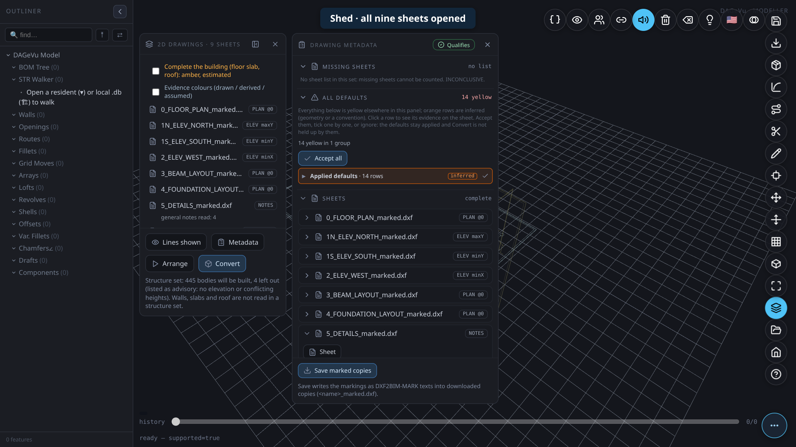
Picture B2-a · Shed · all nine sheets opened: the list of sheets with their roles, and the verdict Qualifies**
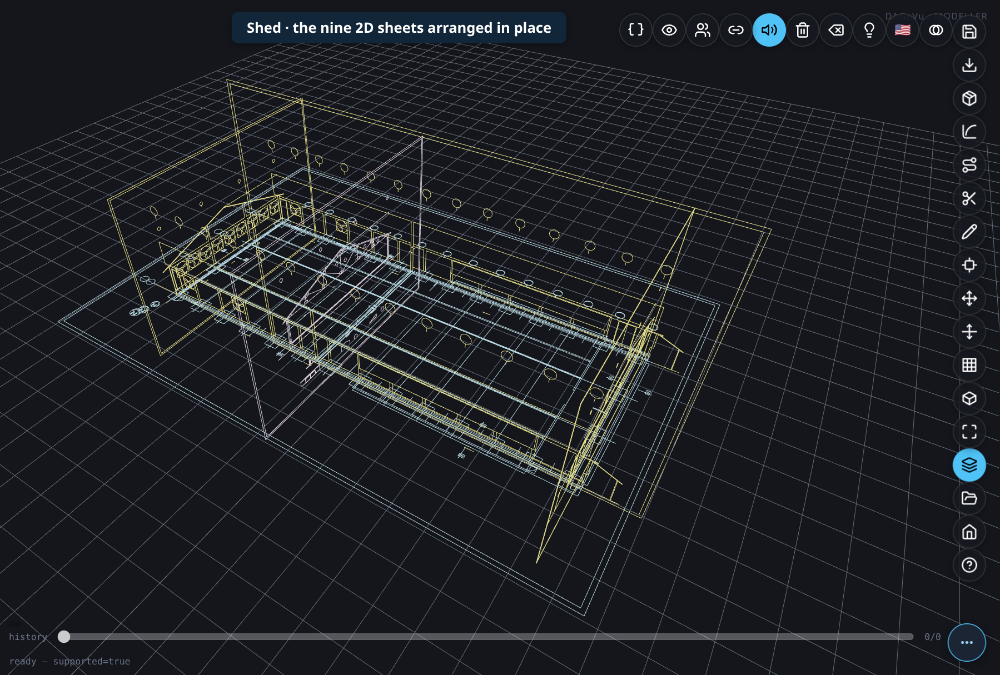
Picture B2-b · Shed · the nine 2D sheets arranged in place: plans flat, elevations and section standing
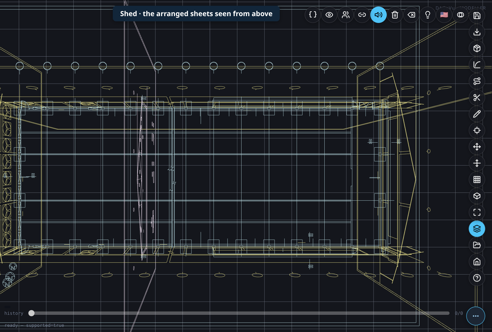
Picture B2-c · Shed · the arranged sheets seen from above: the floor plan again, now with the other sheets around it
B2b · Convert the drawings to the 3D Shed¶
| # | Do | Confirm on screen | Result |
|---|---|---|---|
| B2.5 | If you pressed Arrange, wait until the status line stops counting Step n/46 (or press Esc to stop it). Unfold the 2D Drawings panel and tick Complete the building (floor slab, roof) | The box is ticked | ☐ Pass ☐ Fail |
| B2.6 | Press Convert (ringed in picture B2-d) | Before you press it, the panel’s status line reads Structure set: 445 bodies will be built, 4 left out (listed as advisory: no elevation or conflicting heights). After it: Converted: 511 elements (0 door/window fills), 2 openings cut. The Shed is built in 3D: columns, walls, beams, the roof on its trusses, doors and fans (picture B2-e). The yellow count is unchanged by Convert | ☐ Pass ☐ Fail |
| B2.7 | Orbit around the model | It is the shed as these sheets draw it: one row of columns on each grid line of the floor plan (14 lines along the length, 4 across) | ☐ Pass ☐ Fail |
| B2.8 | Export → Viewer database (.db) (ringed in picture B2-f) | A .db file is downloaded |
☐ Pass ☐ Fail |
| B2.9 | Open the front door, Buildings / IFC, then the card Blank Viewer · Open your own .db file. In the blank Viewer press Ctrl+O (Open Building) and choose the .db |
The status line reads DONE — SHED 511 elements, the same count as the Convert; orbit with the mouse | ☐ Pass ☐ Fail |
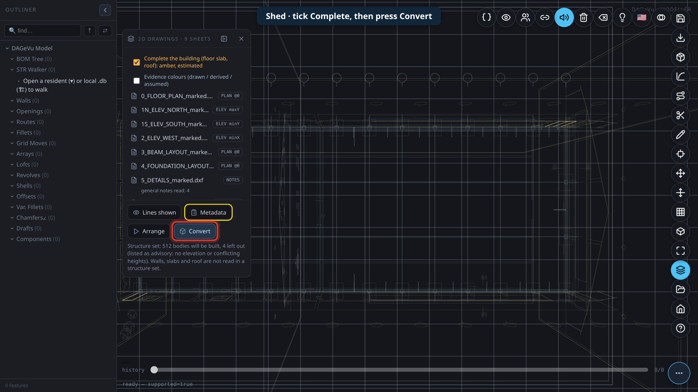
Picture B2-d · Shed · tick Complete, then press Convert, in the 2D Drawings panel
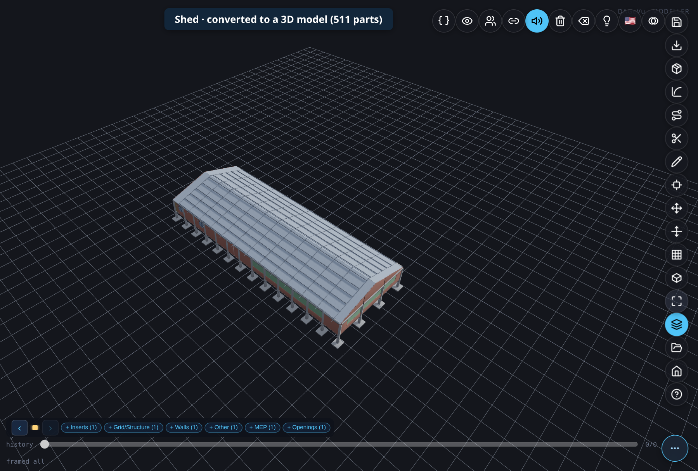
Picture B2-e · Shed · converted to a 3D model (511 parts when these pictures were taken)
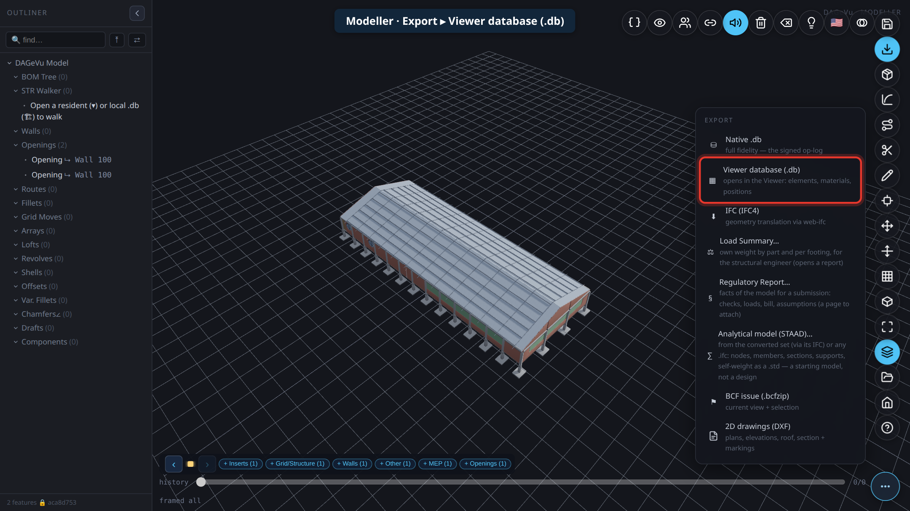
Picture B2-f · Modeller: Export ▸ Viewer database (.db)
Full detail of every panel: DXF2BIM guide.
B3 · Fit the 4D schedule and the 5D rates to your local scene¶
The schedule and the cost come from reference files the Viewer ships with. You edit your own copy in the browser. Full detail: Your own 4D / 5D references.
| Reference | Open it from | Example edit for this test |
|---|---|---|
5D Rate Pack (the active pack, for example cidb2024_my) |
Settings → Edit Project JSON → 5D Rate Pack | raise the rate of one material (for example walls) by 10 % |
| 4D Schedule Template | Settings → Edit Project JSON → 4D Schedule Template | add waiting days after one phase: in dependencies → within_level, raise lag_days of the superstructure rows by 5. (A phase has no length of its own to type: its length is worked out from the parts and the crews) |
| 4D Sequence & Labour Rules | Settings → Edit Project JSON → 4D Sequence & Labour Rules | change one trade’s crew size |
| # | Do | Confirm on screen | Result |
|---|---|---|---|
| B3.1 | Note the Viewer’s total cost (Find panel: total cost; it is the cost of the 13 drawn bays, see the note at the top of chapter B) and the schedule’s finish date (Time Machine, key T) |
With the shipped rates the total reads USD 96,839 (RM 372,457) — total building cost (the digits may be grouped differently in your browser's language). The amount in brackets is the rate pack's second currency (RM), whatever language you choose; your local currency for the chosen language is in development. A higher figure, such as USD 97,979, means the B0.7 exclude box missed the expansion joint. Write the total and the finish date down: _ / _ | ☐ Pass ☐ Fail |
| B3.2 | Make the rate edit and the lag edit above. Your copy is saved in this browser as you type | The form keeps your value; a list shown as JSON text must stay valid JSON | ☐ Pass ☐ Fail |
| B3.3 | Reload the Viewer tab, so it reads your copies | The building opens again | ☐ Pass ☐ Fail |
| B3.4 | Read the total cost again | It moved in the direction of your rate edit | ☐ Pass ☐ Fail |
| B3.5 | Open Time Machine (key T). Press Jump to start, then Build | The finish date moved by the days you added (5 on each edited row); the day counter and the placed count rise as the parts go up in order | ☐ Pass ☐ Fail |
| B3.6 | ⬇ Download your edited files, then Reset them | You keep your copies as files; the Viewer is back on the shipped references | ☐ Pass ☐ Fail |

B4 · Send the model to the ERP as a Project Order¶
Do this in the Viewer, on the Shed you opened in B2.9. (In the Modeller, ERP ▸ Project Order prices a building that was opened from a database; for a model made from drawings it tells you to use this route.) Full detail: Send it to ERP.
| # | Do | Confirm on screen | Result |
|---|---|---|---|
| B4.1 | Open the Find panel (key F) and click one group of parts in its list (for example a column type). The list fills only when you search: click the model first, press F, type a word in its box (for example column) and press Enter | The panel shows the group's cost and the button › ERP | ☐ Pass ☐ Fail |
| B4.2 | Press › ERP | The status line reads Project Order: 1 lines · contract … (saved) and a link open ↗ appears | ☐ Pass ☐ Fail |
| B4.3 | Press › ERP again | Project Order: 0 lines: nothing new is added, the order is keyed by the model's name (SHED) | ☐ Pass ☐ Fail |
| B4.4 | Click open ↗. On the Kernel ERP sign-in page choose GardenAdmin, then Log In | The ERP opens on the project SHED (BIM: SHED) with its planned amount (the amount of the group you clicked in B4.1). Its Phase and Task tabs each hold one record. The line from the model is under Task Line (with the Task selected), showing the same planned amount: a line shows in the tab of its lowest level, as in iDempiere (Task Line: a task is set; Phase Line: a phase but no task; Project Line: neither), so Project Line and Phase Line read 0 records | ☐ Pass ☐ Fail |
If your ERP is a legacy iDempiere (not the Kernel ERP): your administrator installs the BIM OOTB plugin in it once (A5). Then do B4 in the Viewer that your iDempiere serves. The steps are the same; only where the Viewer comes from and what you confirm change. (Why: a browser does not let a page from another site call your iDempiere, so the Viewer is served by the iDempiere itself.) Do L1 to L3 after chapter D, or on a copy of your iDempiere: the project SHED that L2 creates is one more project there, and chapter D's figures are for the 14 projects without it.
| # | Do | Confirm on screen | Result |
|---|---|---|---|
| L1 | Open your iDempiere/bimootb/viewer/viewer.html?blank=1&erpUser=GardenAdmin&erpClient=11&erpRole=102&erpOrg=11&erpWarehouse=103 (GardenWorld's user and ids; use your own), press Ctrl+O and open the Shed's .db as in B2.9 |
The Viewer opens the Shed: DONE — SHED 511 elements | ☐ Pass ☐ Fail |
| L2 | Do B4.1, press › ERP, type your iDempiere password in the window Sign in to iDempiere, and press Push | The window shows your user and ids, filled in. Then the status line reads iDempiere Project #… · created with "projects":1 and open ↗ appears. (Chrome may show its own password windows: press OK, then No thanks) | ☐ Pass ☐ Fail |
| L3 | Click open ↗ and log in to your iDempiere (tick Select Role, choose HQ, as in chapter C; Chrome may show its own windows: press OK, then No thanks) | The Project window opens on SHED (BIM: SHED) with the planned amount of the group you clicked in B4.1 | ☐ Pass ☐ Fail |
B5 · Mark your run against the reference pack¶
This is the step that How do I pass? (at the start of this guide) points to. The UAT Run Checker compares what your run produced with the run this guide was proven on, stage by stage. It reads your files in your browser; nothing is uploaded. Keep the files from B0.9 and B2.8 and the two lines from B2.9 and B3.1 for this step.
| # | Do | Confirm on screen | Result |
|---|---|---|---|
| B5.1 | Download the reference pack (link in What you need) and open the UAT Run Checker. In box 1 choose the pack's .zip |
Under box 1: Pack intact: 19 files checked, built 2026-11-15 …. A damaged or wrong file is refused, and Mark my run stays off | ☐ Pass ☐ Fail |
| B5.2 | In box 2 select your nine …_marked.dxf from B0.9 (all at once); in box 3 your SHED_extracted.db from B2.8; in box 4 paste the Viewer's status line from B2.9; in box 5 the total-cost line from B3.1 (before your rate edit) |
The boxes hold your files and lines | ☐ Pass ☐ Fail |
| B5.3 | Press Mark my run | One row per stage: B0.9 marked sheets, B2.8 Viewer database, B2.9 status line, B3.1 total cost, each PASS, FAIL or NOT GIVEN, with the reason under it. Your run reads PASS when all four pass. A tester who skipped B00 and B0 has no marked files: B0.9 reads NOT GIVEN and the run PARTIAL PASS | ☐ Pass ☐ Fail |
| B5.4 | Press Download result (uat_result.json) and attach the file to this sign-off | The file is saved | ☐ Pass ☐ Fail |
Proven (witness W-UAT-CHECK, 2026-11-15) on the pack as it is served: a run equal to the proven one marks PASS on all four rows; a run whose B0.7 exclude box was skipped marks FAIL on all four (515 elements, USD 97,979); an empty form marks INCONCLUSIVE; a pack with one file changed is refused.
Notes (chapter B): __________
C · ERP: the hands-on exercise (Project Mgmt Accounting, as GardenWorld Admin)¶
Use the 12 test projects. The table says, per project, what to make. The products are the Construction products of A3.6 (not GardenWorld's own); use any GardenWorld vendor, the Purchase price list and HQ Warehouse. Do not type a price: the order line takes it from the price list, which is the product's standard cost rounded to the cent (68.1167 becomes 68.12). On each document, set Project to the test project (the windows do not ask for a phase).
Log in for chapter C: log in as GardenAdmin (password GardenAdmin on a fresh GardenWorld), tick Select Role, and choose the organization HQ and the warehouse HQ Warehouse (with the default * an order will not save: Fill mandatory fields: Organization, Warehouse). If Chrome shows Change your password, press OK; if it asks Save password?, press No thanks (else it takes the keys meant for the page). Each document opens its own window tab: close it (×) when done, or the first tabs are pushed off the strip.
| Product | Name | Unit | Standard cost (USD) |
|---|---|---|---|
| PWD-04.2 | Brick masonry | M3 | 68.1167 |
| PWD-07.2.2 | RC 1:2:4 column | M3 | 115.5250 |
| PWD-08.1.2 | Reinforcement bar Grade 400 | KG | 0.8333 |
| PWD-10.6 | Steel section | KG | 1.0750 |
| PWD-10.21 | Profiled metal roofing | M2 | 4.8167 |
| Project | Name | Phases ticked (from the pack) | Purchase orders | How far the completed order goes | Issue to the project |
|---|---|---|---|---|---|
| TD_RIVERSIDE | Riverside Tower | 3 of 5 | complete: 29 M3 PWD-04.2; leave in Draft: 7 M3 PWD-04.2 | Paid in full | 3 M3 PWD-04.2 |
| TD_DEPOT | North Depot | 1 of 4 | leave in Draft: 1,008 KG PWD-08.1.2 | — | 92 KG PWD-08.1.2 |
| TD_BRIDGE | Bridge Deck | 2 of 4 | complete: 21 M3 PWD-07.2.2; leave in Draft: 31 M3 PWD-07.2.2 | Half paid | 5 M3 PWD-07.2.2 |
| TD_CLINIC | Clinic Wing | 2 of 4 | — | — | 107 KG PWD-10.6 |
| TD_DATAHALL | Data Hall | 1 of 3 | complete: 1,674 KG PWD-10.6; leave in Draft: 1,116 KG PWD-10.6 | Received | 178 KG PWD-10.6 |
| TD_SUBSTATION | Substation | 1 of 3 | complete: 104 M2 PWD-10.21 | Ordered only | — |
| TD_CARPARK | Car Park | 2 of 3 | — | — | 95 M2 PWD-10.21 |
| TD_SCHOOL | School Block | 3 of 4 | complete: 1,350 KG PWD-08.1.2 | Paid in full | 321 KG PWD-08.1.2 |
| TD_PUMP | Pump Station | 1 of 3 | — | — | 36 KG PWD-10.6 |
| TD_OFFICE | Office Fit-out | 0 of 3 | — | — | — |
| TD_WAREHOUSE | Warehouse 3 | 0 of 3 | leave in Draft: 133 M2 PWD-10.21 | — | — |
| TD_PLAZA | Plaza | 3 of 3 | — | — | 110 KG PWD-08.1.2 |
The products cost at Standard: a receipt at any price leaves a product's cost where it is, and every issue raises the project's Spent by quantity × standard cost. With this table the projects spread across the dashboard's Budget colours (chapter D) instead of all turning red. Five projects (TD_DEPOT, TD_CLINIC, TD_CARPARK, TD_PUMP, TD_PLAZA) issue a product that was never received, so its on-hand quantity goes negative. GardenWorld allows that; a warehouse that does not allow negative stock refuses those issues.
C1 · Purchase orders¶
Make one order per row of the table that has a purchase order, with the quantity it states.
| # | Do | Confirm on screen | Result |
|---|---|---|---|
| C1.1 | Purchase Order window, New. Header: Business Partner Seed Farm Inc. (or any vendor), Price List Purchase, Warehouse HQ Warehouse, Project the test project (the field sits in the header). Save. Tab PO Line, New: Product the table's product, Quantity from the table; leave the price as the price list gives it. Save | The line price is the product's standard cost rounded to the cent, as the Purchase list prices it (for example 68.12 for PWD-04.2, standard cost 68.1167). The order's Total Lines = quantity × that price (for example 29 × 68.12 = 1,975.48) and Grand Total is the same (the tax rate is 0). Source: the price is the product’s Price tab, Purchase list (A4.2); multiply it by the quantity yourself | ☐ Pass ☐ Fail |
| C1.2 | Document Action ▸ Complete ▸ OK on the orders the table marks complete; leave the others as they are | Document status Completed on those, Drafted on the others | ☐ Pass ☐ Fail |
C2 · Material receipt¶
| # | Do | Confirm on screen | Result |
|---|---|---|---|
| C2.1 | For each completed order whose How far is Received, Half paid or Paid in full: Material Receipt window, New. Header: Business Partner the same vendor, Order the purchase order (the project fills in from it). Save. Tab Receipt Line, New, choose the Order Line (product, quantity and Default HQ Locator fill in). Save, then back on the header Document Action ▸ Complete ▸ OK. (Do not use Create lines from: on this iDempiere build it lists no lines.) | The receipt is Completed and carries the order's product and quantity. The product’s on-hand quantity rose (menu entry Storage per Product: type the name in the menu’s Search box), and in the Product window, tab Costs, its Standard cost did not change | ☐ Pass ☐ Fail |
C3 · Vendor invoice and payment¶
Only Half paid and Paid in full orders (TD_BRIDGE, TD_RIVERSIDE, TD_SCHOOL).
| # | Do | Confirm on screen | Result |
|---|---|---|---|
| C3.1 | Purchase Invoice and Credit/Debit Note window, New. Header: Target Document Type AP Invoice, Business Partner the same vendor, Project the test project. Save. Then press Create lines from, choose the purchase order (or its receipt), tick the line, and press the Create lines from button of the window that opened (not the header's; the line is saved with it). Then Document Action ▸ Complete ▸ OK | The invoice is Completed; its Grand Total equals the order's | ☐ Pass ☐ Fail |
| C3.2 | Payment and Receipt window, New. Document Type AP Payment, Business Partner the same vendor (this window finds a partner by its search key, not its name: type SeedFarm, the vendor's search key in the Business Partner window, A4.1; its search opens with Vendor = No: set Vendor to Yes, press ReQuery, choose SeedFarm), Invoice the invoice you just made (the amount fills in; the Project field disappears once an invoice is chosen, that is normal), Bank Account MoneyBank 1234, Tender type Check. For Half paid change Payment amount to half the invoice total, rounded up to the cent (TD_BRIDGE 2,426.13: pay 1,213.07, and 1,213.06 stays open). Save, then Document Action ▸ Complete ▸ OK | The payment is Completed. On the invoice, Paid is ticked for Paid in full; for Half paid it is not, and the open amount is the other half | ☐ Pass ☐ Fail |
C4 · Issue materials to site¶
This is done in two parts, once per test project that has an issue in the table (nine projects). The pack's projects are category General, and iDempiere refuses to issue material to a General project (Project not Work Order or Asset), so each project is first set to the Work Order (Job) type.
| # | Do | Confirm on screen | Result |
|---|---|---|---|
| C4.1 | Project window, open the test project. Press Set Project Type, choose Work Order (Job), OK. Then in the header set Line Level to Phase and Save (the test projects carry Project, which hides the Phase tab) | The message says OK. The project's phases are still there (the Phase tab still lists them) and the Set Project Type button no longer accepts another type | ☐ Pass ☐ Fail |
| C4.2 | Menu Project Management ▸ Issue to Project. Project the test project, Locator Default HQ Locator, Product the table's product, Movement Quantity from the last column, Movement Date today. Leave Shipment/Receipt, Expense Report and Project Line empty. OK. Close the Issue tab when done (each issue opens its own tab) | The message says Created 1 | ☐ Pass ☐ Fail |
| C4.3 | Project (Lines/Issues) window, find the project, tab Issues | One issue line with the product and quantity, Document Status Completed | ☐ Pass ☐ Fail |
| C4.4 | Back in the Project window, look at Project Balance in the header | It rose by quantity × standard cost: TD_RIVERSIDE 3 × 68.1167 = 204.35, TD_BRIDGE 5 × 115.525 = 577.63, TD_DATAHALL 178 × 1.075 = 191.35 (the window shows 4 decimals, for example 204.3501 and 577.625: pass on the rounded figure). A project that issues nothing stays at 0 Source: the quantity is on the issue line (C4.3) and the cost is the product’s Standard cost on its Costs tab; multiply them yourself and compare with Project Balance | ☐ Pass ☐ Fail |
C5 · Tick a phase¶
| # | Do | Confirm on screen | Result |
|---|---|---|---|
| C5.1 | Project window, a test project (for example TD_DEPOT), tab Phase (no Phase tab: the project did not go through C4.1, so first set Line Level to Phase in the header and Save). Open the next phase that is not ticked (in the list: click its name, then its pencil Edit Record; if the tab shows one phase as a form: Next record). Set Invoice Rule to None (the project's own rule; without it Save is refused: Fill mandatory fields: Invoice Rule), tick Complete, Save | The phase stays ticked (for TD_DEPOT 2 of 4 now); that project's Done on the dashboard rises (chapter D) | ☐ Pass ☐ Fail |
Notes (chapter C): __________
D · The dashboard (Project Mgmt Accounting; the read job: System Setup)¶
The dashboard reads a file that a small read job writes from your iDempiere. Run the job first, and again whenever you want fresh figures (it needs Node.js; on a server that is not localhost it also needs BRIDGE_USER and BRIDGE_PASS, else it stops: the full line with user, password, tenant and role is in the Developer's note):
BRIDGE_BASE=http://<your-idempiere>:<port> node capex/tools/legacy_snapshot.js
It writes the file capex/legacy_snapshot.json inside your copy of the repository (the folder from A1.1, next to index.html), prints a line §DASH_LEGACY_SNAPSHOT … projects=14 … unavailable=[] (14 on a fresh GardenWorld), and ends with a line §DASH_LEGACY_READ_VERDICT PASS …. Then open /capex/index.html?source=legacy on the server that holds that copy (see How the dashboard connects to the data). Every tile is described in The dashboard page.
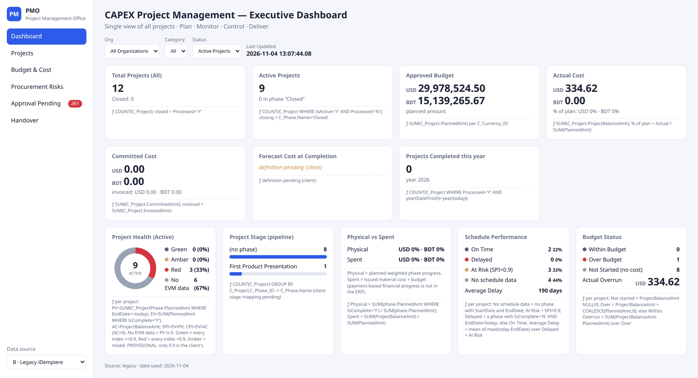
| # | Do | Confirm on screen | Result |
|---|---|---|---|
| D1 | Read Total Projects and Active Projects | 14 and 14 on a fresh GardenWorld: the 12 test projects plus GardenWorld's own Standard and Landscape (plus any of your own). Step into the source: click the number: the side panel lists the projects behind it, and its row count is the figure. ƒ formula under the tile shows the measure (D7) | ☐ Pass ☐ Fail |
| D2 | Read Approved Budget | The sum of the planned amounts, per currency: USD 4,667.80 (the 12 test projects 4,067.80 plus Landscape 600.00). Step into the source: click the number; add the Approved column of the panel yourself. Press ERP ↗ on a project (it opens your iDempiere: log in if it asks): iDempiere’s Project window shows the same figure in Planned Amount, and it equals the sum of Planned Amount on the Phase tab | ☐ Pass ☐ Fail |
| D2b | Read the Budget tile (Within / Over / Not started) | Over lists TD_CARPARK (Spent 457.59 against a plan of 330.00) and TD_DATAHALL (191.35 against 181.50), the other 7 projects with issues are Within; Not started is 5: TD_OFFICE, TD_SUBSTATION, TD_WAREHOUSE and GardenWorld’s own Landscape and Standard, which carry no spending on a fresh GardenWorld. The three counts read Within 7, Over 2, Not started 5. If your server's Standard project already carries spending, it moves out of Not started Step into the source: click Total Projects and read each project’s Spent, Approved and Budget columns: Over is Spent above Approved, Not started is Spent 0 | ☐ Pass ☐ Fail |
| D3 | Read Actual Cost (Spent) | It rose by what you issued in C4: 2,020.45 over the 12 test projects. GardenWorld’s own projects carry no spending on a fresh GardenWorld, so the tile reads USD 2,020.45, 43 % of plan (add whatever your own projects already carry). Step into the source: click the number and add the Spent column (it adds up to 2,020.46, as each row is rounded to the cent: pass at the tile's 2,020.45); each project’s Spent is Project Balance in iDempiere’s Project window (C4.4) | ☐ Pass ☐ Fail |
| D4 | Open Procurement Risks in the left menu. Then open a test project's page (D5) and its Procurement tab | Left menu: Open purchase orders = the 5 you left Drafted, USD 6,741.25 in total (each order line is priced to the cent, C1.1). Project page: the Supply chain card shows that project's order at the stage you took it to (TD_SUBSTATION Ordered, TD_DATAHALL Received, TD_BRIDGE Invoiced, TD_RIVERSIDE and TD_SCHOOL Paid) and lists its receipt, invoice and payment Step into the source: each document number in the Supply chain card is a record number: open that receipt, invoice or payment in iDempiere (Material Receipt, Purchase Invoice and Credit/Debit Note, Payment and Receipt) and read its status and amount | ☐ Pass ☐ Fail |
| D5 | Click a number on a tile | The drill panel lists the projects behind it; click a project to open its page | ☐ Pass ☐ Fail |
| D6 | On the project page of TD_RIVERSIDE, open the tabs | Overview: Approved 371.25, 5 phases. The Schedule tab draws the 5 phase bars with the pack’s dates, the first 3 Complete Source: the project’s Phase tab in iDempiere (Planned Amount, start and end dates, Complete); read them there and compare | ☐ Pass ☐ Fail |
| D7 | Open ƒ formula under a tile | The formula is shown; it is the same Performance Analysis measure your iDempiere holds (A2.3) | ☐ Pass ☐ Fail |
| D8 | Change Layout (top bar) to Executive and Skin to Dark, then back to Classic and Light | The look changes. Executive shows fewer, re-labelled tiles (Actual Cost becomes Spent so far) with the same figures (4,667.80 approved, 2,020.45 spent); Classic shows them all again | ☐ Pass ☐ Fail |
| D9 | Log Out of iDempiere, log in again (tick Select Role, choose HQ, as in chapter C) and read the Home tab. Home goals are recalculated only when they are older than 30 minutes (System Configurator name ZK_DASHBOARD_PERFORMANCE_REFRESH_INTERVAL, 1800000 ms). If you opened Home at A2.2 less than 30 minutes ago, the goals still show the counts from before the test data (for example CAPEX Total Projects 2): either wait, or open System Admin ▸ General Rules ▸ System Rules ▸ System Configurator, set that name's Configured Value to 60000, save, and log in again |
The CAPEX goals show the same counts as the dashboard tiles (for example CAPEX Total Projects 14, CAPEX Active Projects 14), money in your login’s currency rounded to the unit (CAPEX Approved Budget 4,668 for the tile's 4,667.80). A goal that has a target shows its percentage of that target, not the count. The targets are the ones A2 installs, the plan of the system the dashboard was built on (Actual Cost, Committed Cost, Invoiced: USD 39,971,166.17; Health Green, Schedule On Time, Budget Within: 9 active projects). So on the test data Actual Cost reads 0 % and Health Green 55 % (5 of 9, on the day this guide was proven: the colours drift with the calendar), not the tiles' share; that is expected. Your own targets are set in the Performance Goal window (Measure Target) | ☐ Pass ☐ Fail |
Notes (chapter D): __________
Known limits (do not fail a step on these)¶
- Proposed figures. Forecast, Procurement Risks and Handover use definitions we proposed; they await your confirmation.
- Postings in the Kernel ERP. Project issues complete but are not yet posted to the books in the browser-based Kernel ERP; in your iDempiere they post as usual.
- Task dates. Task dates are kept by the BIM Document plugin; without it, the Schedule tab draws phases only.
- Standard costing is a PostgreSQL iDempiere set-up. The products script, and the change of GardenWorld’s accounting schema to Standard costing, are not available in the browser-based Kernel ERP. Applying the script changes how all GardenWorld products are costed on that server, so apply it on a test copy, not on a live GardenWorld.
- This pack in the Kernel ERP. Loading this test pack into the browser-based Kernel ERP (rather than into your iDempiere) is not available yet.
Sign-off¶
| Chapter | Role / name | Date | Passed / total | Signature |
|---|---|---|---|---|
| A · Set up | System Setup: | / 17 (21 with A5) | ||
| B · BIM | BIM: | / 43 (29 if you were given the marked copies and skipped B00 and B0; +3 with L1–L3) | ||
| C · ERP | Project Mgmt Accounting: | / 10 | ||
| D · Dashboard | Project Mgmt Accounting: | / 10 |